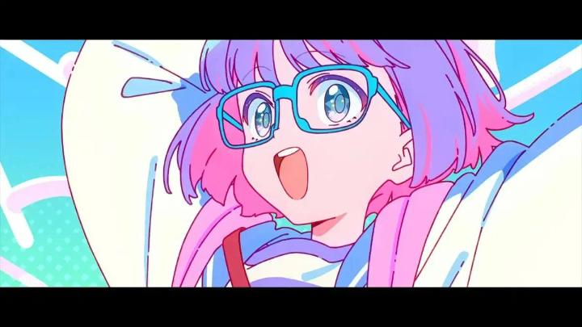
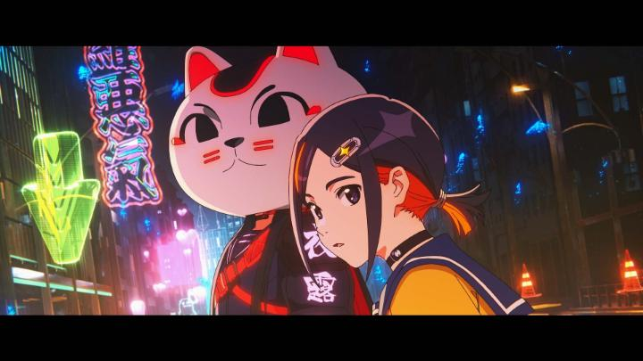

Even though they are somewhat rare, I'm happy that Japan continues to surprise us with anthology anime films, collecting a handful of standalone short films that allow animators and writers to stretch themselves. "Grotesqqque" is the latest such anthology, and I saw the world priemere at Montreal's Fantasia Film Festival, with an audience buzzing to see the mysterious production. There are three shorts here, each a bit over 30 minutes in length. The first is "A(E)liens," a cute and perky story about Elie, an octopus-like alien obsessed with Earth's culture (naturally, Japan's culture), trying to fit in as a cute human girl and make friends. The second is "4649 Girl" (I'll call it "Butterfly Queen" from here) a fast-paced action thriller about a girls' only VR battle-royale MMO, with each player trying to kill everyone else in the match to earn the crown of "Queen." Finally, "Nocturne" is a serene vampire story, about four vampire girls that have outlived the human race, spending their days exploring the ruins of Earth in a van - it's like "Girls Last Tour" mixed with "Black Butler's" sexual undertones, with hints to sadder emotions in the underbelly. I suppose the first thing I want to say is to warn you: this is an anime fan's anime. All the shorts seem to encompass the entire breadth of what anime is. Colours are unrealistically gaudy, comedy is quirky, violence is extreme and jaw-droppingly cool, and romance doesn't hold itself back. And virtually all the involved characters are cute anime girls. A room of otaku will love all of it. But it's easy to forget that anime, even as it grows in popularity, is alientating, and if you aren't already convinced that anime is the greatest art the human race has ever achieved, this movie might be a bit... much. With a full length film or series, there's more time to ground the story and characters, or to serve the story, not every single anime trope can fit in, but "Grotesqqque" doesn't have time to waste. I also wonder if the stories were limited by being so heavily inspired by existing anime tropes... each is a satisfying short film, a bit longer than a pilot episode of a series, but not substantial enough to justify, say, a full-length film or series on its own. Despite all the films being exclusively intended for anime fans, the tone and style of each short is very different, and all good in what they were trying to achieve. Which is the best? I liked "Butterfly Queen" the most for its punk-rock aesthetic, exciting tournament-style action, and, being driven almost entirely by action, having the most consistently kinentic and arguably best animation and coolest character designs. But I've overheard discussions after the screening of people ranking "Nocturne" the best, for having the most effective and emotional story (with the girls-only romantic subtext and elegant-horror theming acting as icing on the already deep cake). And if those were too mature or violent, it's hard not to enjoy the comparably light, but still exciting, "A(E)liens" for being downright adorable - Elie is the best character of the three films, and I want to be her friend.

That all the films are so different, and still each satisfying, is an achievement. Even if I wouldn't label these are artistically meaningful as, say, "Memories" or "Modest Heroes," there were all arguably more entertaining. From a technical standpoint, they all kinda look like a typical modern TV anime series in terms of animation (I'd rank the films out of 5 as 3, 4, and 3 respectively), which is in line with Cloverworks - a consistently reliable, but not outstanding, animation house. The biggest production feature that genuinely wow'd me was the music... WOW! Featuring a ton of bold, modern vocal songs, elevating the title sequences between each short, I immediately wanted to buy the soundtrack!It sounds like I'm being more harsh than I really feel. Keep in mind that "anthology" is one of my most consistently-highly-rated genres (even though I describe it as a "format," and not a "genre"). Even against its peers, "Grotesqque" is awesome, and for an anime club, it might be the most fun anthology you can screen. (The only sore point is that Aniplex's logo was the first in the production credits... as of mid-2026, Aniplex and their subsidary Crunchyroll (RIP Funimation and Rightstuf.com), and parent company Sony (think Playstation) have become the most hated conglomerate in the fandom, destroying any hope of physical media, and increasingly being more bold in removing your digital content too. It makes me long for the days when I could at least hope for an expensive Bluray at a MSRP 10x what Americans would think was acceptible... now, I'm not sure anyone will have any option to access to it at all.) - "Ani" More reviews can be found at : https://2danicritic.github.io/ Previous review: review_Grimgar_-_Ashes_and_Illusions Next review: review_Ground_Control_to_Psychoelectric_Girl